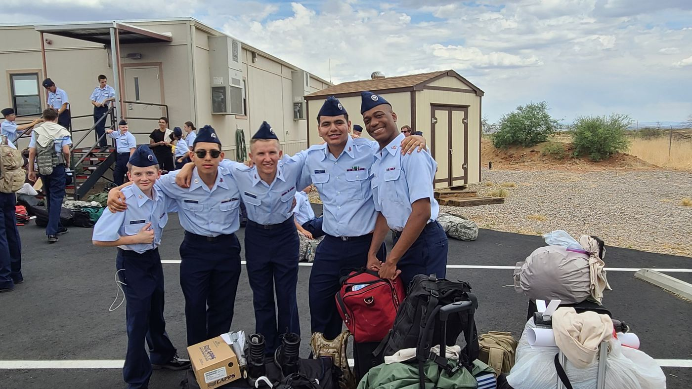

2021 to 2024
Learning and breaking.
Cadet years. Uniforms, encampments, early mornings, gear on the pavement before sunrise. The first real discipline I had came from that.
Alongside it I chased success, money and approval. I failed. I got lost. I made mistakes. None of it filled the hole it promised to fill.